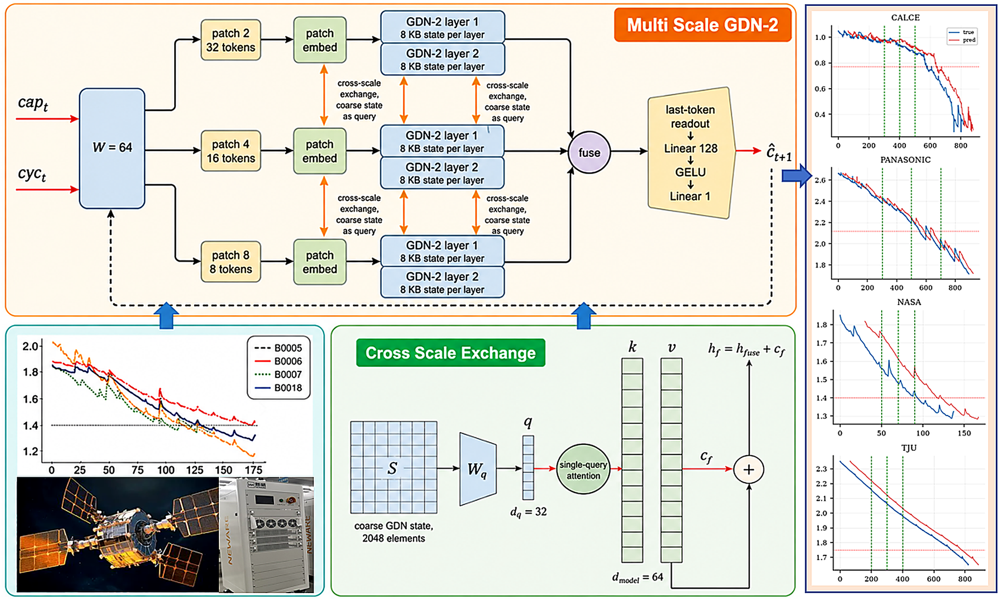
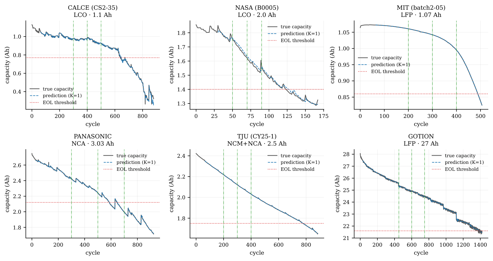
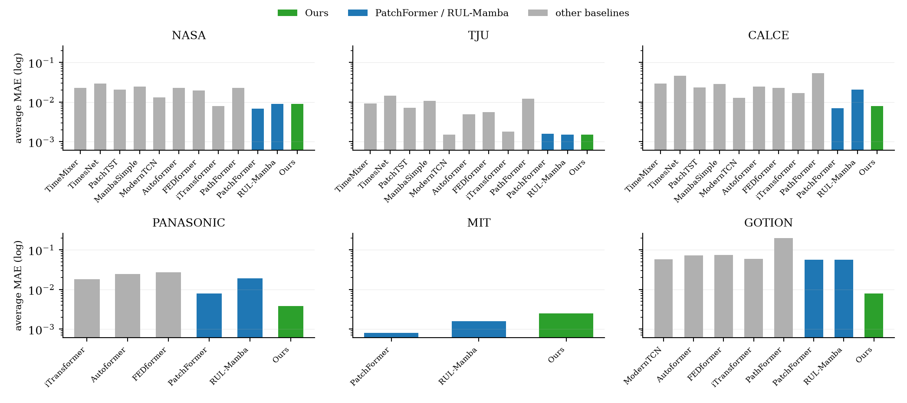
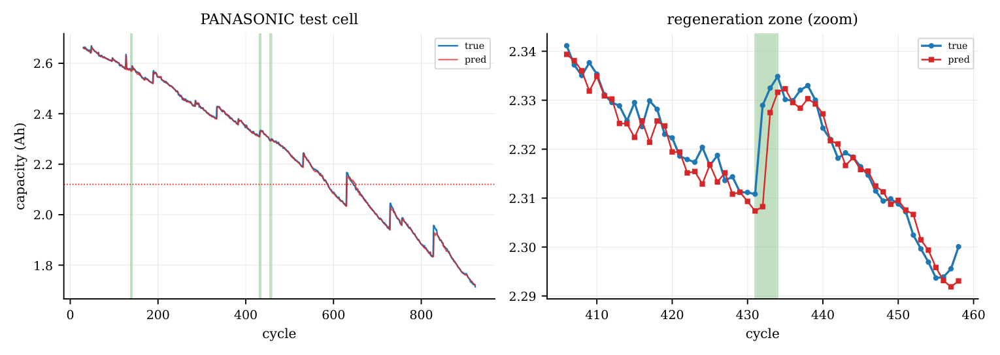
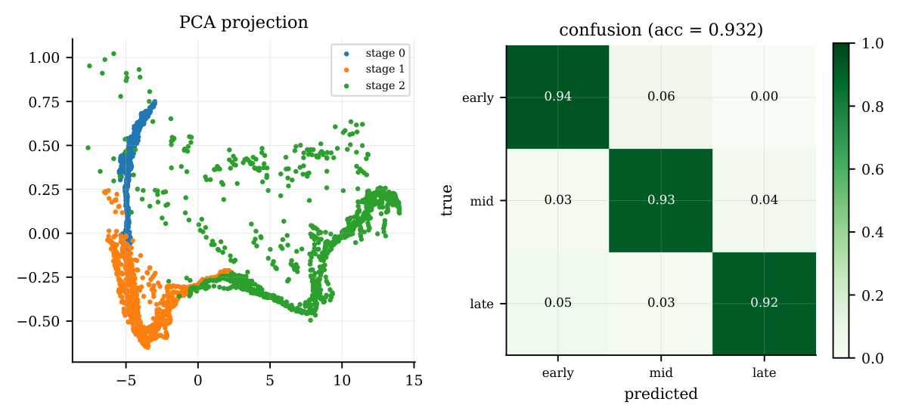
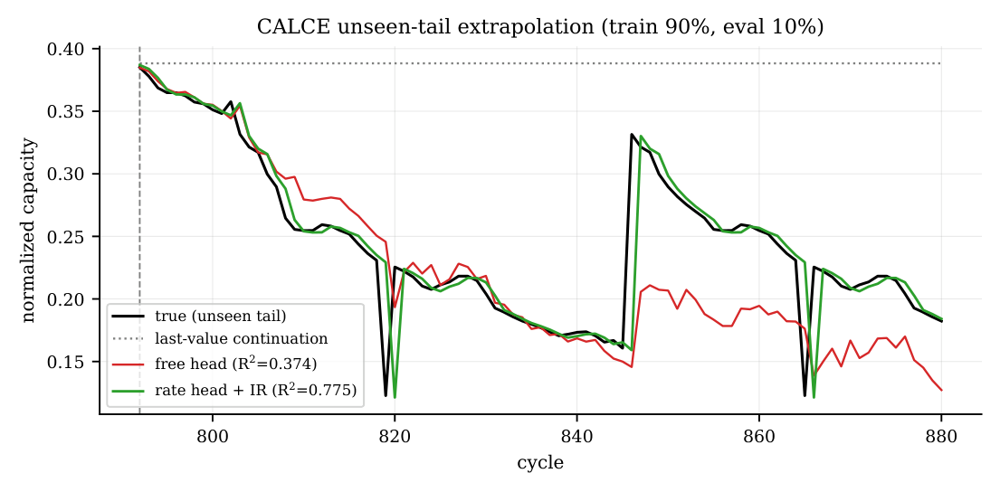
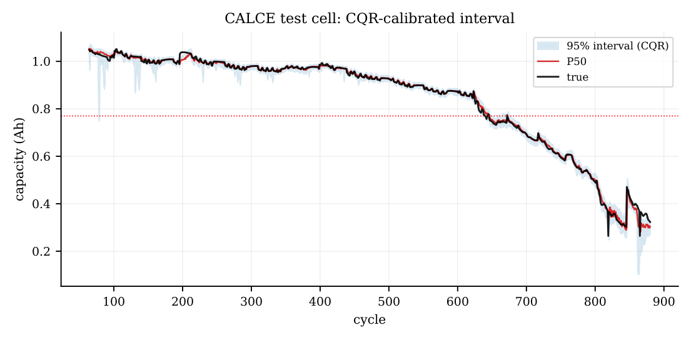
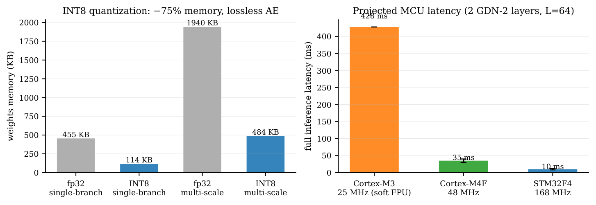

面向边缘部署的多尺度线性注意力电池容量退化预测
多尺度线性注意力 + 物理速率头 + 带覆盖率保证的预测区间，运行在 BMS 单片机上
→ / 空格 翻页 · ← 返回 · F11 全屏 · Ctrl+P 可打印成讲义
01 · 出发点
02 · 研究现状
| 路线 | 代表工作 | 空缺 |
|---|---|---|
| 模型驱动 + 传统 ML | 电化学模型 + EKF／粒子滤波；SVM／SVR／RVM | 参数辨识难；再生与异质退化难以处理 |
| 深度序列模型 | LSTM／GRU、CNN-BiLSTM、Transformer、PatchFormer、Autoformer／FEDformer／iTransformer | 二次注意力 → 嵌入式受限 |
| 状态空间模型（Mamba） | Mamba、MambaLithium、RUL-Mamba | 效率只报 GPU；无嵌入式验证 |
| 灰色系统模型 | 分数阶灰色、灰色 Kalman、灰色迭代 | 形式需按化学／工况手工重构 |
| 物理信息模型（PINN） | PINN、PiDDM（Arrhenius 进目标） | 常规注入路线在标准协议下失效 |
| 线性注意力／递归混合 | Gated DeltaNet、GDN-2 | 主战场在语言模型；电池 + 嵌入式空白 |
02 · 研究现状
按服务器预算设计，无法运行在 BMS 单片机上；且已有工作没有给出边缘部署的性能证据（延迟／占用／精度损失）。
运维决策依赖的是失效时间范围与风险水平，而文献普遍只输出单点预测，未提供置信区间。
目前已有的工作都是在实验室数据上预测的，缺少应对实际带噪声数据的验证。
03 · 方法
GDN-2 递归线性注意力：计算复杂度 O(N)、无需动态分配内存；按 patch 2/4/8 分别提取局部／中期／长期特征进行多尺度融合，解决容量再生问题。
r = softplus(w·h) + softplus(γ)·IR，内阻只能加速衰减——结构上不可能产生非物理的"再生"。
一次前向输出 P2.5／P50／P97.5，再用 CQR 校准；分布无关、有限样本生效，无集成、无采样。
单分支 C 实现与 PyTorch 在浮点舍入内一致（<3e-6）；INT8 1.94 MB → 484 KB，精度无损。
03 · 方法

03 · 方法
W=64（NASA／PANASONIC／GOTION 为 30）。仅以容量为输入——电压/电流/温度/内阻的未来值推理时不可得；归一化用训练电池的全局 min–max。
同一窗口按 patch 2/4/8 切分（32/16/8 tokens）→ d=64 → 各两层 GDN-2。
每层后，粗分支矩阵状态（2048 元素）→ 单个查询 → 读细／中分支键值，残差加回（无门控）。
三分支 last-token 拼接（192 维）→ Linear 128 → GELU → Linear 1；训练目标为窗口 z-score（与基线同口径）。评估是非递归单步：每步输入真实历史窗口。
04 · 实验设计
04 · 实验设计
| 指标 | 定义 | 说明 |
|---|---|---|
| MAE / RMSE | 预测容量轨迹 vs 真实轨迹 | 归一化容量域 |
| R² | 轨迹拟合优度 | ≤1，越高越好 |
| TRUL | SP → 真实 EOL 穿越的循环数 | 循环 |
| PRUL | SP → 预测序列首次穿越阈值 | 循环 |
| AE | |TRUL − PRUL| | 循环，主指标 |
| RE | AE / TRUL | 相对误差 |
05 · 结果 ①
| 数据集 | 位置 | 关键数字 |
|---|---|---|
| PANASONIC | 高于全部已发表基线 | MAE 0.0036–0.0040 vs 最强 0.0105 |
| TJU | 同协议第一 | 0.0013 vs 0.0014；R² 0.9999 |
| GOTION | MAE 领先 6–8× | 0.0074–0.0086 vs 0.053–0.061 |
| MIT | 饱和区达标 | R² ≥ 0.9995（三个 SP） |
| NASA | SP70/90 的 R² 领先，SP50 落后 | R² 0.9804 vs 0.9623（SP90） |
| CALCE | 第二（落后 PatchFormer） | 0.0066–0.0092 vs 0.0057–0.0081 |
05 · 结果 ① 附

05 · 结果 ① 附

05 · 结果 ① 附

05 · 结果 ②
0.0068 vs 0.0065（Wilcoxon p=0.037）；NASA 最差且种子方差最大（±0.0014）。p=0.625），NASA 取得最优均值（0.0084 vs 0.0087）。05 · 结果 ② 附

05 · 结果 ③
0.00427±0.00002 vs 自由头 0.0065（10 seeds）；控制实验证明增益来自物理机制，而不是"绝对空间训练"这个副产品。
未见尾段外推精度翻倍——恰是数据最稀薄、决策最密集的区间。
drop30／高斯／脉冲等传感器损坏场景全部取胜，且不牺牲干净数据精度。

05 · 结果 ④

05 · 结果 ⑤
<3e-6），零动态分配，每层状态固定 8 KB。1.94 MB → 484 KB（−75%），精度几乎无损（AE 2.2→2.3）。
06 · 预备问答（上）
为什么用 GDN-2，而不是 Transformer 或 Mamba？
架构更强 + 能部署。GDN-2 属 delta-rule 线性注意力：矩阵状态带擦除门，能定点遗忘（Mamba 类对角状态只能加、不能精确擦除），文献中长上下文检索更强；同时状态固定 8 KB、O(N)、零分配。我们表里 MambaSimple 差距很大，RUL-Mamba 互有胜负但 R² 我们全胜。
物理头为什么一定要用内阻（IR）？
路线研究的结果：目标正则伤害外推、特征拼接被容量历史冗余掉，都不成立；唯一在标准协议下存活的是内阻驱动的速率头——而且内阻是锂库存损失的宏观表征，方向性明确。
CALCE 上为什么输给 PatchFormer？
单调平滑场景是 patch 式注意力的主场；我们 MAE/RMSE 落后、R² 接近。AE 差异另有几何解释：CALCE 尾段近乎平坦（≈1.9 mAh/cycle），小容量偏差会放大成数个循环的越界误差。
06 · 预备问答（中）
既然每次输入都是固定窗口，线性注意力在这里起什么作用？
在固定窗口下没有内存或速度上的优势——L=32 时注意力矩阵只有 4 KB，常数内存对任何固定窗口模型都成立。真正起作用的地方是内存预算与上下文长度解耦：注意力缓冲 ∝ L²，给定 SRAM 就存在一个可容纳的最大上下文；我们的状态 O(1)，没有这个上限。
RUL-Mamba 同样基于线性时间架构，两者的区别在哪里？
Mamba 与我们同属因果、固定状态递推，"支持长上下文"并非我们独有。区别在组合：长上下文支持 + 已验证的 MCU 部署链（位精确 C 实现、INT8、QEMU 周期数）；RUL-Mamba 只报告 GPU 侧效率，没有部署路径。此外，delta 规则的矩阵状态带擦除门、可定点覆盖旧记忆，Mamba 对角状态只能衰减累加——这也是我们选择 GDN-2 的依据之一。
线性注意力在计算效率上有优势吗？
在上下文变长时是必然的：单步代价 O(1)、总代价 O(L)，而注意力是 O(L²)。在当前工作点上体现不出来——L=32 时注意力 ≈4.1k／token，我们 ≈10.2k（每 token 五趟 dk×dv 读写 ×4 头），交叉点约 L≈80；且递归沿时间是串行的、注意力是稠密矩阵乘，GPU 上更有优势。但超过 L≈80 之后差距只会拉大，而受 SRAM 限制，注意力最终根本无法达到那么长的上下文。
06 · 预备问答（下）
为什么没有在全部数据集上都最优？
论文主张是"与协议匹配基线相比处于第一梯队"，不是处处第一。输点集中在平滑单调（CALCE）与历史极短（NASA SP50）两类场景。不要归因为"线性注意力牺牲精度"——我们在三个数据集赢过二次注意力基线，且未做注意力类型的受控消融。
六个数据集会不会有 cherry-pick 嫌疑？
同一 per-SP 协议、10 seeds；两个电池专用基线是官方代码自行运行而非引用别家数字；GOTION 的起始点对齐同领域论文设定。
训练预算与基线一致吗？／MCU 只验证了单分支？
预算：全部数据集统一 100 epoch（敏感性实验已做：200 收益不均、300 无增益、早停因验证窗口过小而弃用，均写入 limitations）。部署：验证的是逐层状态机制，单分支与主模型共享该机制；完整三分支需 ≥512 KB flash（论文已声明）。
07 · 当前状态